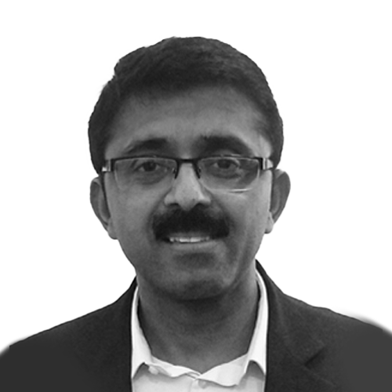

Our Team
Held together by shared values, bringing together diverse skillsets, and aligned with a common purpose.
-
Vishal Mehta
Founder, Partner, IC Member -
Venky Natarajan
Founder, Partner, IC Member -
Priyamvada Ramkumar
Partner, Lok III and IC - Lok IV -
Vignesh Ramanujam
Partner -
Hari Krishnan
Partner -

Manoj Agrawal
Chief Financial Officer -
Rajat Bansal
Principal -
Rini Singhal
Vice-President -

Vikram Dileepan
Principal -
Ambika Narayanan
Vice President -
Pranay Sultania
Associate -
Chhavi Uboweja
Associate -
Nikita Bansal
Assistant Vice President, Corporate Finance -
Abhay Gupta
Manager – Corporate Finance -
Sanjay Sharma
Administration -
Nivas Anand
Administration -
Anmol Saxena
ESG Analyst -
Pranav Varma
Associate
Chhavi Uboweja
Associate
Chhavi Uboweja joined Lok Capital in December 2022. She brought an overall experience of more than five years across corporate finance, investment banking and due diligence. Prior to Lok, she worked as an M&A and strategy manager focusing on buy-side investments in the financial technology sector at Capital India (an India-based financial services group). She also worked in the investment banking team of KPMG India for three years, advising corporate clients for strategic transactions or fundraising focusing on sectors such as industrials, automotive, healthcare and education technology. She also has experience with financial duediligence for M&A and private equity transactions across various sectors with KPMG India.
Chhavi holds a Bachelor of Management Studies specializing in finance from Shaheed Sukhdev College of Business Studies, University of Delhi and has completed Level I of the CFA program of CFA Institute, USA.
Abhay Gupta
Manager – Corporate Finance
Abhay started his journey with us in August, 2022. Having a total experience of over 8 years. Currently, at Lok, he is involved in compliance, HR, finance and accounts. Prior to joining Lok, Abhay worked for 3.5 years with BDO, Chartered Accountant Firm – where he worked across service lines including Statutory audit and advisory services, Risk-based audit assessment, Internal Financial Control assessment, and business consultancy.
Abhay holds a Chartered Accountant degree from the Institute of Chartered Accountants of India(ICAI). He also has a Bachelor of Commerce from the University of Rajasthan, Jaipur.
Vishal Mehta
Founder, Partner, IC Member
Vishal is co-founder & partner at Lok Advisory Services which advises the funds of Lok Capital. He started Lok Capital operations in 2004 and has successfully built Lok as a premier private equity impact fund. He has also played a key role in fostering Impact Investing space in India including as founding executive director of Impact Investing Council (IIC) and Advisory Board member of AVPN in India. Prior to Lok, Vishal worked for a decade in financial services and telecom sector in Asia, Europe and the US.
He holds an Engineering degree from Delhi University and an MBA from the University of Michigan, Ann Arbor.
Venky Natarajan
Founder, Partner, IC Member
Venky is co-founder & partner at Lok Advisory Services which advises the funds of Lok Capital. Prior to Lok, he was with Intel Corporation and Intel Capital doing early stage technology venture capital investments. Since 2006, Venky has been involved with the Financial Inclusion space in India as an investor and as a member on boards of directors. Venky was also chair of the Small Finance Bank transformation committee at Ujjivan Financial Services.
Venky is on the boards of Veritas, Suryoday, Aurowell, AffordPlan and Dr. Mohans.
He has completed his MBA from Cornell University and also has an M.S. in Electrical Engineering from Arizona State in Tempe.
Vignesh Ramanujam
Partner
Vignesh co-leads technology investing at Lok Capital and focuses on the development of its investment strategy. He has been an active investor in 35+ early-stage startups & funds across India, Singapore & the US. Some of Vignesh's notable investments include Smiles.ai, Karkinos & Tortoise. Previously, he has also had stints at Macquarie Capital & EY in investment banking and transaction advisory, respectively. An economist by qualification and an entrepreneur at heart, his initial taste of the startup world was as founder at his own fintech venture building a web3 social commerce marketplace in India. Vignesh holds an MSc in Finance from the prestigious École de Management in Grenoble, France and is an alumnus of the United World College of South East Asia in Singapore.
Hari Krishnan
Partner
Hari joined Lok in 2021 and co-leads tech investments from Lok. Hari is an ed-tech entrepreneur (exited) turned fund manager with unicorn tech investees. He founded Schoolmate, an ed-tech company in Hyderabad and successfully exited to a listed player in Chennai. Post the exit, Hari joined Astarc Ventures where he managed tech investments. Hari evaluated more than 1,000 tech deals (all proprietarily sourced) and made more than 25 investments in early-stage technology companies in India across sectors (including renowned companies such as Pharmeasy, Liv.ai, Rapido, Jai Kisan, Home Capital, Ion Energy and so on). 20 out of the 25 investees have raised a follow-on round of financing at a higher valuation multiple from marquee VC/PE investors or have become profitable or have been fully exited profitably.
Hari holds a Masters in Management from Birla Institute of Technology Sciences, Pilani.
Manoj Agrawal
Chief Financial Officer
CFO at Lok Capital, Manoj has over 24 years of experience as finance & operations professional. At Lok, Manoj is involved in managing funds operations, back end and compliances.
Prior to joining Lok, Manoj worked with Orbis Financial Corp Ltd (Custodians) for 10+ years, Deutsche Bank Group (Investment Bank) for nearly 2 years and Indiabulls (Brokerage) for 4 years among others. Manoj’s core area of expertise is fund administration, back office operations, legal & compliance and finance with start-ups and global multi-billion dollar organizations in the fields of financial services, Infrastructure Development and Manufacturing.
Manoj holds a Chartered Accountant & Company Secretary apart from various certification courses from IIM-A, NiSM & IBF - Singapore.
Rini Singhal
Vice President
Rini joined Lok in November 2014. She has over 9 years of experience across venture capital and investment banking industry. She primarily focuses on agriculture, small finance banks and healthcare space and has evaluated multiple deals and manages investments across these sectors.
Prior to Lok, Rini was a part of the investment team at Aavishkaar, where she worked on early stage investments across sectors. Before Aavishkaar, Rini spent close to three years in Investment Banking at Nomura working across a wide range of deals.
Rini is an MBA graduate from Narsee Monjee Institute of Management Studies, Mumbai and has a Bachelors degree in Economics from Hindu College, Delhi University. She has also completed Level I and II of the CFA program of CFA Institute, USA.
Vikram Dileepan
Principal
Vikram, since graduating from BITS Pilani, has been a serial entrepreneur with three startups as Founder and CEO including an EdTech, followed by a pioneering residential rooftop solar startup in India, Solartown, which was successfully scaled up to more than 500 pin codes in the top 15 tier-1 cities across the country. After exiting Solartown, Vikram led the co-founding and overall leadership for SunEdison Residential and Small commercial business and transitioned out successfully.
Vikram, being passionate about Climate Tech, has also been an avid Angel investor and advisor in Climate finance, Blockchain technology for CleanTech, Zero Carbon logistics and Electric mobility startups prior to Lok. At Lok, Vikram predominantly manages the Climate Tech portfolio.
Ambika Narayanan
Vice President
Ambika joined Lok Capital in August 2018. Prior to Lok, she worked with KPMG's Deal Advisory function for two years where she performed financial due diligence for M&A and PE transactions across sectors including IT, healthcare, FMCG, manufacturing, energy. She also has internship experience with JM Financial Investment Banking and Goldman Sachs Operations.
Ambika has completed a Masters in Banking and Finance from the University of St Gallen, Switzerland and a Bachelors in Economics from Stella Maris College, Chennai.
Pranay Sultania
Associate
Pranay joined Lok Capital in August 2021. He comes with close to 6 years of experience in the fields of transaction advisory, corporate finance and due diligence. Prior to Lok, Pranay was a part of the deals advisory teams at PwC and Grant Thornton, where he worked extensively on due diligence engagements for M&A and PE transactions of varying sizes, spanning across sectors including financial services, real estate, manufacturing, logistics, IT, FMCG, healthcare and e-commerce.
Pranay is a Chartered Accountant and did his articleship from Sharp & Tannan, Chennai. He has also completed a fellowship in public policy from Young Leaders of Active Citizenship, as part of which he led and executed a live policy research project on "Strengthening India's Fight against Climate Change" for Dr. Vikas Mahatme, Member of Parliament. Pranay is also an active volunteer with Headstart Network Foundation, India's largest startup community committed to changing the world through entrepreneurship.
Nikita Bansal
Assistant Vice President, Corporate Finance
Nikita began her journey with us in 2015. She has over 8 years of experience Finance & Operations. At Lok, she is involved in fund operations and compliances, finance and accounts. Prior to joining Lok, Nikita worked for 3 years with S S Kothari Mehta & Co., Chartered Accountants – where she worked across service lines including assurance services, internal control audit & risk assessment, direct and indirect taxes, among others.
Nikita holds a Chartered Accountant degree from the Institute of Chartered Accountant of India. She also has a Bachelors’ degree in Commerce from Indira Gandhi University.
Rajat Bansal
Principal
Rajat has over 11 years of experience across private equity and corporate finance. He was with Lok from 2014 till 2017 and rejoined the firm as Principal in 2022. His focus in the current role is to build the growth stage BFSI and fintech portfolio for the fund while also leading fund raising from select investors.
Prior to rejoining Lok, Rajat was an Investment Director with Sabre Partners, leading investments in financial services and healthcare. He also has experience in fund raising and corporate finance with IFMR Holdings and CEPA Ltd prior to his first stint with Lok.
Rajat has an MBA from Indian Institute of Management Calcutta and Bachelors in Engineering from Delhi College of Engineering.
Anmol Saxena
ESG Analyst
Anmol Saxena joined Lok Capital in July 2023 as an ESG Analyst. She comes with an experience of two years in the fields of sustainability and corporate social responsibility, and will be working closely with Lok's portfolio companies to integrate robust ESG practices, monitoring, evaluation and reporting. Previously, Anmol worked as an Assistant Manager in Corporate Sustainability at JSW Group wherein she led the sustainability disclosures, materiality assessments, ESG ratings and related investor relations, and was also a part of sustainable financing initiatives. She then worked as a Specialist in monitoring & evaluation at JSW Foundation wherein her responsibilities included leading organizational alignment with ISO 26000, implementing an online MIS System, conducting impact and need assessment studies, and performing monitoring and evaluation of CSR projects in multiple cause-areas.
Anmol has completed a Masters in Development Studies from the Institute of Development Studies based in the UK. She also holds a B.A. in Economics (Hons.) from Shri Ram College of Commerce, University of Delhi alongside certifications in Impact Evaluation from J-Pal and climate-reporting from Climate Disclosures Standard Board.
Advisory Council
Composed of both veterans of industry and expertise across a variety of sectors, we’re grateful for their time, experience, and strategic guidance.
GS Sundararajan
G S Sundararajan is currently serving on a few Boards as a non-executive, Independent Director. PayTM Bank, NBFC's of Centrum and Hindhuja groups are some of the Boards that he is serving on. G S Sundararajan was till recently the Group Director, Shriram Group, He joined Shriram Group as the Managing Director of Shriram Capital Ltd, the Holding Company of Shriram Group's financial services and Insurance businesses across India and overseas. Prior to this, he was the CEO & Managing Director of Fullerton India Credit Company Ltd. He was also the Managing Director of Fullerton Enterprises Private Limited.
Mr. Sundararajan holds a Bachelor of Agricultural Engineering degree from Tamilnadu Agricultural University, Coimbatore and a Post Graduate Diploma in Management from the Indian Institute of Management (IIM), Ahmedabad.
Santanu Paul
Founding CEO and MD of TalentSprint, a global platform for deeptech education and high-end coding bootcamps, with investments from Nexus Venture Partners, the National Skill Development Corporation, and the National Stock Exchange Group. Earlier served as Senior Vice President for Global Delivery Operations and Head of Indian Operations for Virtusa Corporation (NASDAQ IPO in 2007). Prior to that was CTO at OpenPages and Co-Founder and CTO at Viveca Inc., both Boston-based tech firms, with investments from Matrix Partners and Sigma Partners. Started as a Research Scientist at the famed IBM T.J. Watson Research Center in Yorktown Heights, New York. Received a B.Tech from IIT Madras and a PhD from the University of Michigan in Computer Science. Board stints, past and present, include the National Payments Corporation of India, NSDL Payments Bank, Advait ARC, BNP Paribas Sharekhan, and Vivriti Capital. Inventor on multiple patents, contributing columnist and occasional podcaster.
Donald Peck
Co Founder and Advisor
As a mentor, Donald co-founded Lok Capital in the year 2006.
The three titles that best describe Donald’s 30-year experience in emerging markets are as a business advisor, an investor and an emerging markets economist. This also includes the 12 years he spent in building venture capital businesses in India. Donald also advises a number of UK charities on projects in environment, health and education in developing countries, particularly Asia.
Until 2008, Donald looked after a South Asian venture capital portfolio of over $1 bn for the UK Government-owned Commonwealth Development Corporation (CDC). He was also a founding partner of Actis and director of CDC. Before joining CDC, from 1978-88, Donald advised companies investing in Latin America, followed by a stint where he himself invested in the emerging markets of South America and Eastern Europe at the World Bank Group in Washington.
Donald holds a D.Phil in History from the University of Oxford.
Priyamvada Ramkumar
Partner, Lok III and IC - Lok IV
Priyamvada joined Lok in 2014. She has over 15 years of experience across private equity, investment & commercial banking. She spends a large part of her time at Lok in developing and executing the financial inclusion thesis for the fund. She has evaluated many deals across the NBFC and housing finance space and manages Lok’s investments in these areas. Prior to Lok, she worked with Veda Corporate Advisors, a boutique investment bank, advising companies across sectors on private equity and M&A transactions. A gold medallist, Priyamvada completed her Bachelors in Commerce from Stella Maris College. She holds an MBA from XLRI, Jamshedpur. She serves as a nominee director on the boards of Veritas Finance and Mintifi Finance.
Vijay Advani
IC Member
Vijay Advani is Executive Chairman of Nuveen, the investment manager of TIAA. Nuveen is a leading global asset management firm with more than $1 trillion under management, offering a comprehensive range of outcome-focused investment solutions designed to secure the long-term financial goals of institutional and individual investors. Its investment specialists offer deep expertise across a comprehensive range of traditional and alternative investments through a wide array of vehicles and customized strategies.
Emily Chen
IC Member
Healthcare leader focused on driving growth for digital health companies through effective Board management, coaching teams, building B2B sales pipelines, developing pricing models, structuring partnerships, and raising venture capital.
Competencies: Healthcare, Medicaid, Medicare, dual eligibles, direct to employer contracting, value-based care, risk contracting, accountable care, strategy, sales, business development, partnerships, pricing, venture capital
Venture Roles
Great talent is meant to work on great missions.
The companies we’re invested in are always on the lookout for more amazing people to join the(ir) party. Here are a few select roles below. If you’d like to consider working at any of the ventures we’ve invested in, please write to us at contact@lokcapital.com and we’d love to connect with you.
Lok Fellowship
Osam
You will be responsible for driving Osam’s strategic initiatives related to procurement function in order to solidify the farmer relationships.
Lok Fellowship
Akshayakalpa
You will be responsible for driving sales & marketing efforts as part of Akshayakalpa’s front-end team in Bengaluru.
Lok Fellowship
Osam
You will be responsible for driving Osam’s sales and marketing initiatives and deepen its distribution network in Bihar.
Lok Fellowship
Monsoon Harvest
You will be responsible for driving Monsoon Harvest’s growth strategy in International Markets.